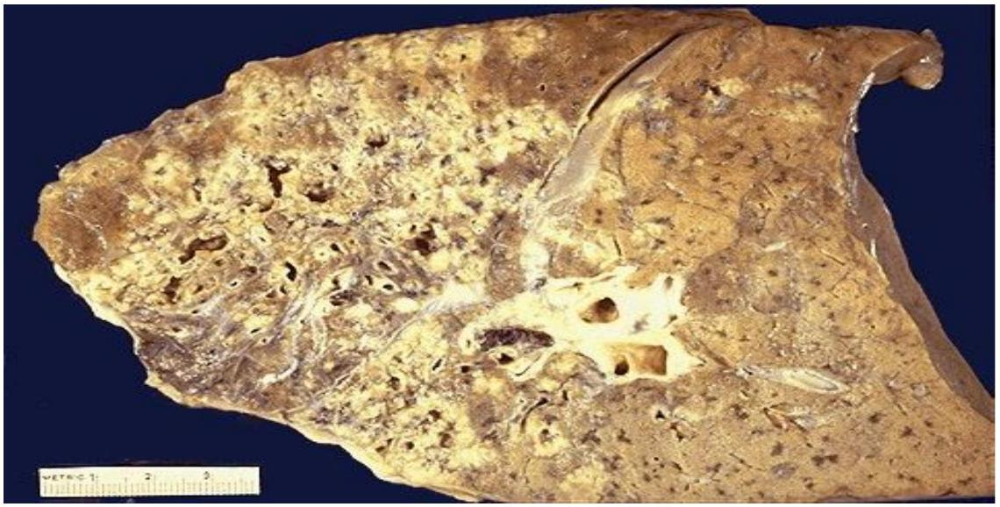
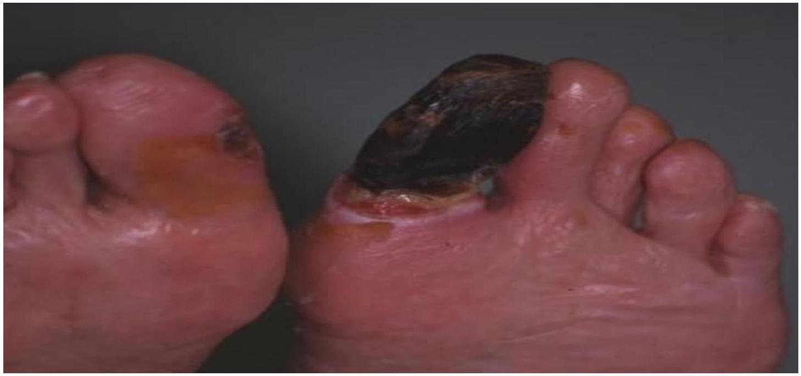
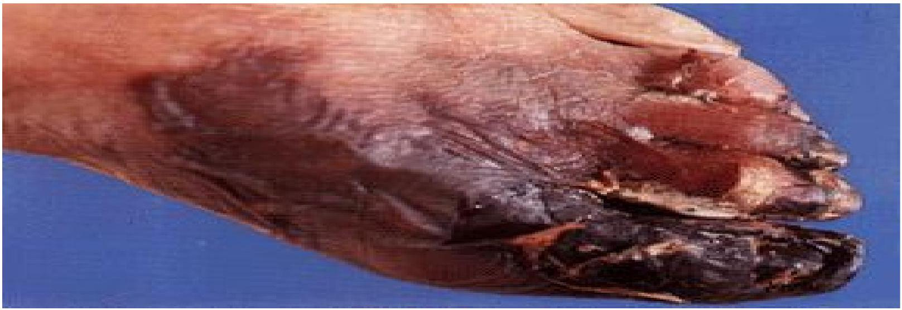
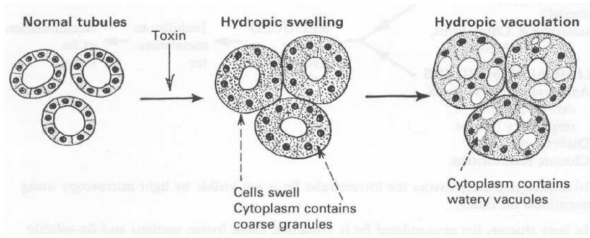

This is the death of cell or groups of cells while they still form part of the living body and implies permanent ceassation of normal function. Necrosis may be sudden or gradual called necrobiosis.
Causes
Blood supply:- cells are cut off from oxygen and nutrition ( ischaemia)
Toxins e.g. bacterial, plants, snake bites, scorpions, chemical like acid, alkalis, cyanide and carbon tetrachloride are capable of causing necrosis
Antibody antigen reactions e.g. TB
Severe infections by bacteria or virus e.g. the cytopathic affect of viruses as in poliomyelitis
Physical agents e.g. extreme of temperatures as in very cold or hot temperatures
Mechanical pressure causes disruption of cells
Ionizing radiation destroys nucleic protein (DNA or RNA)
Characteristics of a necrotic cell
Increased membrane permeability
Hydrolysis of nucleus (karyolysis)
Nuclear disruption and disappearance
Loss of all physiological function and processes
Types of necrosis
A. Coagulassive necrosis- this is a condition of cell death leaving the tissue hardened or (mumified)
B. Colliquative necrosis- cell death with softening of the tissue affected (liquafactive)
1. Caseous necrosis i.e.- a firm cheese like mars of necrotic tissue e.g TB

Cheese like material in caseous necrosis
2. Fat necrosis- traumatic rapture of fat cells with fat getting into tissue to firm a hard nodule. It can either be enzymatic as in acute pancreatitis, enzyme lipase escapes into the peritoneal cavity and splits the omental fat
3. Suppuration- this is a special form of colliquative necrosis; pus itself consists of tissue fluids, dead leucocytes, bacterial, proteolytic enzymes and tissue debris
4. Fibrinoid necrosis,collagen fibres are broken down, amyloid material resembling fibrin that stain pink as seen in connective tissue disease e.g. rheumatic fever, rheumatoid arthritis
5. Gangrenous necrosis This is necrosis plus infection. Green black change of tissue colour with foul smelling gas hydrogen sulphide is released
Types of gangrene
Dry gangrene is necrosis with mummification of the affected part. This occurs where the tissues are dry with oedema and the infection is little e.g. in the foot- toes.

Wet gangrene is necrosis that occurs in soft tissues with plenty of saprophytic infection e.g. in the intestine

Wet gangrene with production of fluid and gas
Causes of gangrene
All the causes of necrosis are as above with super added saprophytic infection
Primary infection caused by clostridium welchi. This causes the production of gas and green pigment derived from breakdown of haemoglobin. The infection is gas gangrene
Effects of necrosis to affected part
Loss of function of the affected cells, tissues, organs or system, a fact that depends on the number of cells involved.
Release of cellular enzymes into the blood that may be used to diagnose various diseases e.g. enzymes such as trans aminases SGOT and SGPT that are released into blood when the liver, heart muscles undergo necrosis as in severe hepatitis and myocardial infarction
Somatic death: death of an individual defined as complete and persistent ceassation of respiration and circulation with extensive and irreversible brain damage.
Degeneration
Definition
This is less than a necrosis form of cell damage in which some less vital cell functions of the cell are lost while others that are vital like respiration and selective permeability remains intact. This is also accompanied. By morphological changes i.e. lessening of cell reality as well as physical alteration
Nature of degeneration
There is alteration in the morphology of cells produced by
Accumulation of metabolites or other substances in cells damaged by proceeding injured referred to as true degeneration
Overloading of the previously normal cell with materials which are abnormal in either type of quality (infiltrative) change in cells in both cases may appear similar and all indicative of cell derangement short of actual death. Most changes are reversible if the initiating cause is removed. If prolonged or of severe degree, cell death (necrosis) occurs.
Specific types of cell degeneration
Cloudy swelling
Causes
Severe infarction
Toxins
Defective nutrition-ischaemia
Anaemia and anoxia
Sites: - any cell can be affected but mostly the paranchymal cells of the liver( hepatocytes) kidney and cells tend to be more commonly and severely affected
Microscopic appearances
Cells are slightly swollen and show hazy and granular cytoplasm. This is due to breakdown of filamentous mitochondria. The granules are composed of protein.
Result
This is the earliest detectable degenerative changes of a cell and is completely reversible
Hydropic degeneration
Nature There is increased fluid (water in the cell that may be due to increased osmotic pressure within the cell or due to alterations in the permeability of the cell membranes by toxin agents
Causes
Severe water and electrolyte disturbances e.g. depletion of potassium
Physical and chemical agents e.g. burns, scalds chloroform and carbon tetrachloride
Infections
Prolonged cloudy swelling
Sites: liver cells and convoluted tubular cells of the kidney
Microscopic appearance
There are multiple vacuoles of clear fluid within the cell. They coalesce in severe cases to form a single large vacuole which displaces the nucleus

Drawing of hydropic swelling of the renal tubules
Hyaline degeneration:
Definition
This is the pink staining homogenous glassy appearance of the cytoplasmic protein of the cell. It is due to severe cell damage and representation of a type of protein coagulation quantitatively less than Coagulative necrosis.
Sites
Renal tubules are the sites following mercury poisoning or nephritis or in cells infected with virus. It may also occur in voluntary muscles in severe bacterial infections like typhoid fever, severe nutritional deficiencies e.g. protein and vitamin lack.
Glycogen infiltration
This is a condition of excessive amount of intracellular glycogen
Causes
Diabetes mellitus-this leads to excess cellular glycogen especially prominent in the renal and liver cells. The cells are distended and show nuclear ballooning or clear vacuoles of glycogen
Tumour- some tumour cells are rich in glycogen e.g. seminoma, renal cell carcinoma, Squamous cell carcinoma and chondroma
Glycogen storage-disease e.g. von Gierkes' disease inherited genetic disorders of glycogen metabolism
Fatty change
This is the presence of demonstrable fat within paranchymal cells especially those of the liver, kidney and head. Usually excess fat in the body is stored in special storage tissue cell called adipose tissue. It is due to imbalance of fat and fatty acid entering the cell and the rate of utilization or release of fat by the cell. All paranchymal cells that accumulate an abnormal amount of fat are injured.
Microscopic appearance
Fat may be seen in the form of multiple small droplets or in a single fat globule that may displace the nucleus.
Causes:
Hypoxia e.g. chronic venous congestion as in anaemia
Starvation and wasting diseases
Clinical and bacterial toxins e.g. phosphorus, carbon tetrachloride and alcohol
Fatty change is also a feature of severe infections e.g. typhoid fever, small pox, septicaemia
Microscopic appearance
The affected organs show pallor and on cross section give a greasy feel especially the liver; the kidney shows linear pallor streaks due to fat in the renal tubules.
Results
Fatty change is a reversible process and if the cause is removed, the cells usually revert to normal but prolonged fatly change with evidence of nuclear degeneration eventually becomes irreversible and progresses to necrosis and fibrous replacement.
Amyloid degeneration (amyloidosis)
Nature
Amyloids are predominantly extracellular fibrillar material which is due to a number of diseases. Extensive deposits are visible by the naked eye and cause enlargement of the affected tissue or organ.
In histological: examination
Haematoxylin and Eosinophil sections of amyloid show homogenous pink material.On electron microscopy, amyloid is seen to consist of filaments twisted together in pairs
Demonstrations of amyloid in gross specimen of tissues using lugol's iodine method
Amyloid has a high affinity for lodine. This forms the basis for useful macroscopic test when lugols lodine solution is poured over a tissue the amyloid is stained deep brown in contrast to normal tissues that is stained very lightly.
Types:
Primary amyloidosis It has no known cause
Secondary amyloidosis- occurs as a complication to certain disease like
Any chronic suppurative infections e.g. TB, Osteomylitis, Syphilis, Bronchiectasis
Rheumatoid arthritis
Multiple myeloma and Hodgkin's disease
Sites
Heart, tongue, skin, skeletal muscle, gut, spleen, kidney, liver and lungs are the common sites. In secondary type- liver, kidney, spleen and gut that are severely affected.
Effects
Pressure effects on adjacent structures interfere with the transfer of water and solutes across the walls of the affected small blood vessels and capillaries.
Clinically it causes enlargement of organs affected e.g. liver, spleen, heart and kidney.